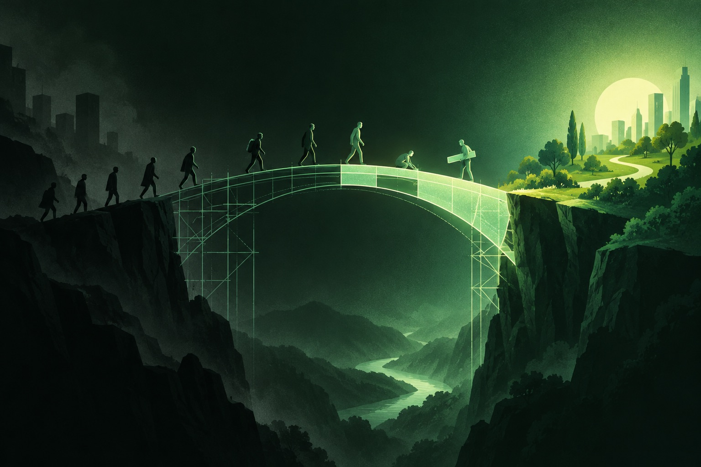
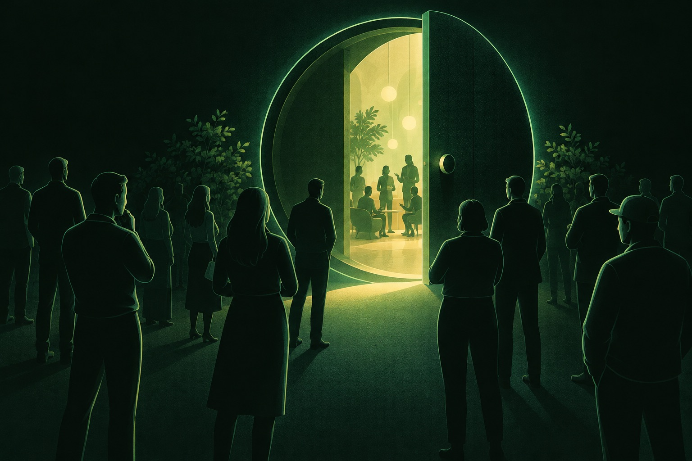

O Brasil descobriu a superdotação. A conversa ainda é sobre QI.
Resumo Executivo · O que revelam os dados sobre AHSD no Brasil
Este observatório é o primeiro levantamento em larga escala a cruzar a cobertura jornalística profissional com a voz espontânea das redes sociais (YouTube, TikTok, Instagram e X) para mapear a percepção pública sobre Altas Habilidades e Superdotação (AHSD) no Brasil entre 2021 e 2026.
1 · Explosão de Interesse (+675%)
O assunto saiu do nicho acadêmico para o debate de massa. As manchetes na imprensa passaram de 53 (2021) para 411 (2026), enquanto cortes de podcasts e vídeos curtos no TikTok e Instagram acumularam mais de 74 milhões de visualizações e 4,4 milhões de curtidas.
2 · A Mudança de Foco nos Anos
Em 2021 e 2022, a pauta era quase exclusivamente sobre crianças-prodígio e pontuações astronômicas de QI. A partir de 2024, a conversa amadureceu: o protagonismo migrou para o sofrimento escolar, a dupla excepcionalidade (TDAH e autismo) e a descoberta tardia na vida adulta.
3 · O Abismo entre Mídia e Público
Enquanto a imprensa noticia conquistas, legislação e marcos institucionais, mais de 60% dos comentários públicos ainda expressam desconfiança, piadas ou o medo do estigma de ser rotulado como "arrogante". O tema precisa urgentemente de educação e acolhimento.
Onde olhamos e o que juntamos
Quatro redes e a imprensa. Cada fonte mostra uma parte da conversa: a imprensa noticia, o YouTube explica e diverte, o TikTok e o Instagram transformam o tema em identidade, e os comentários dizem o que o público pensa disso tudo.
Cinco fontes, cinco papéis
Itens: o que as buscas devolveram sobre o tema, não o total das redes. Círculos comparam as fontes em cada medida. Instagram: alcance em seguidores (anel), porque a rede não mostra views. X e imprensa: sem curtidas nem views na coleta. Ver a tabela · Metodologia
De 2021 a 2026, o tema saiu do nicho
O número de manchetes cresceu quase oito vezes no período. Em 2026, a lei da política nacional, as crianças-símbolo e os vídeos virais puxaram o assunto para o centro.

Estes números são o que as buscas devolveram e que passou pelo filtro de tema, não a quantidade de vídeos e posts que existe nas redes. As redes mostram só uma parte dos resultados de cada busca e puxam para o recente e popular; Instagram e TikTok foram coletados em 2026. Use para comparar proporções, não o tamanho do tema. Barra mais clara: o ano de maior volume na fonte. Veja o funil de cada fonte.
Fatos reconstituídos a partir das reportagens, vídeos e posts coletados. Números de membros da Mensa são os noticiados pela imprensa.
Do quiz de "gênio" à criança no Senado: nove vídeos que resumem a mudança do período. Clique para assistir; o vídeo só carrega quando você pede.
A mídia fala de escola. O público fala de QI.
Os mesmos 13 temas aplicados a comentários, vídeos e reportagens de 2021 a 2026. A diferença entre as colunas é o descompasso entre o que se publica e o que se comenta.
Cada quadro tem a própria escala (o máximo aparece no canto) para mostrar a direção da curva; os números de baixo comparam 2026 com 2021 em pontos percentuais. Os temas que mais mudaram vêm primeiro. A data dos comentários do YouTube é aproximada por ano. Ver as tabelas de temas →
Os nomes da conversa
Alcance, curtidas e comentários dos perfis com mais tração em cada rede, somando só os conteúdos sobre o tema publicados de 2021 a 2026.
Fichas dos perfis com mais engajamento sobre o tema, mais os nomes em destaque. Clique para ver no mapa de influência.
Quem fala de quê, e o quanto
Quatro desenhos mostram a mesma conversa de jeitos diferentes. Escolha no topo a medida que quiser (alcance, curtidas ou comentários) e os quatro se atualizam juntos.
Cada bolinha é uma pessoa, com foto. Quanto maior a bolinha, mais repercussão ela teve. A cor mostra o grupo a que ela pertence. Os círculos com nome são os temas. Uma linha liga uma pessoa a um tema quando pelo menos 1 em cada 5 publicações dela fala daquele assunto. Arraste as bolinhas para explorar.
Cada retângulo é um tema. Quanto maior o retângulo, mais a conversa gira em torno dele. Dentro de cada tema, os nomes são quem mais contribui para ele. Clique em um tema abaixo ou no gráfico para detalhar seus criadores.
Seis jeitos de falar de superdotação
Agrupamos os criadores pelo vocabulário dos próprios posts e vídeos (legendas, títulos e falas transcritas), sem olhar para quem são. Os grupos que saíram têm públicos e alcances muito diferentes.
Piada, desconfiança e "será que eu sou?"
Os comentários se dividem entre quem brinca com o próprio QI, quem duvida dos testes e quem se reconhece no que vê. Abaixo, as duplas de palavras mais repetidas e os comentários mais curtidos de cada tema, sem o nome de quem escreveu.
Mais curtidos no Instagram
"Será que eu sou?" e "por que eu me sinto assim?"
Por trás das piadas, há um público que pergunta e sofre. Separamos os comentários que fazem perguntas ou falam de sofrimento e pedimos à nossa IA que dissesse qual dúvida ou angústia cada um expressa.

O peso de cada dúvida
Cada rede conta uma história diferente
A mesma régua de vocabulário aplicada a todas as fontes mostra a especialidade de cada uma. Os números de alcance, curtidas e comentários mostram onde o público está.
Uma mesa redonda para os 2% mais altos
Mais do que uma nota de corte em teste de QI: por que a necessidade de viver e dialogar entre iguais é uma questão de saúde mental e acolhimento.

O que é a Mensa e qual é o seu verdadeiro propósito? Fundada em 1946 no pós-Segunda Guerra Mundial, na Universidade de Oxford, pelos juristas e pesquisadores Roland Berrill e Lancelot Ware, a Mensa nasceu com uma utopia humanista: unir mentes com altíssima capacidade intelectual, sem distinção de raça, credo, posição social ou ideologia política, colocando a inteligência a serviço da paz e do livre intercâmbio de ideias. O nome vem do latim mensa ("mesa"), uma referência explícita à mesa redonda da lenda arturiana, onde ninguém senta na cabeceira, não há hierarquia e todas as vozes têm o mesmo peso.
Desmistificando o mito do elitismo: 2% é muita gente. Na cultura popular e na cobertura de TV, o ingresso na Mensa costuma ser retratado como um troféu de vaidade ou a admissão em um clube secreto de semideuses. Os dados, no entanto, desmontam essa caricatura. O critério de admissão (pontuar no percentil 98, os 2% superiores em teste psicométrico padronizado e supervisionado) significa que, em um país com 215 milhões de habitantes, mais de 4,3 milhões de brasileiros são elegíveis. É uma multidão equivalente à população inteira da Paraíba ou da Nova Zelândia, distribuída por todas as classes sociais, profissões e bairros da periferia ao centro, mas cuja imensa maioria cresce e envelhece sem jamais receber um diagnóstico formal.
A urgência de viver e dialogar entre iguais. Para além das estatísticas de QI, a existência da Mensa e de entidades congêneres (como a Febratis e associações de famílias) responde a uma necessidade psicológica vital: a saúde mental da convivência entre pares. Pessoas neurodivergentes com altas habilidades frequentemente acumulam trajetórias marcadas pela solidão crônica, bullying, incompreensão familiar e a dolorosa autocensura de ter de "diminuir o próprio ritmo" para não parecer arrogante. Encontrar um ambiente onde a velocidade do pensamento, os hiperfocos, as piadas complexas e a sensibilidade aguçada são compreendidos de imediato não é privilégio: é acolhimento terapêutico e sobrevivência emocional.
Membros noticiados
Quantas vezes a Mensa aparece
Percentual dos itens de cada fonte que citam a Mensa (2021–2026 nos comentários; toda a base nas demais).
Do que falam os comentários que citam a Mensa
A voz própria da Mensa
Como foi feito este observatório
Por que ouvir as redes, como aplicamos inteligência artificial para ler áudios e textos, e quais são os limites estatísticos da pesquisa.
Recorte Temporal (2021 a 2026). A janela de 5 anos captura a virada histórica da superdotação no Brasil: o período pós-pandemia, o boom dos videocasts de saúde mental, a popularização de testes online e a recente promulgação da Política Nacional de Educação Especial.
Por que ouvir as redes sociais? A imprensa tradicional cumpre o papel de noticiar prodígios, pesquisas e marcos legais. Porém, é nas caixas de comentários e nos vídeos curtos que o público comum se expressa sem filtro: revelando a suspeita de ser neurodivergente, o medo de ser julgado, os traumas do ambiente escolar e a angústia da identificação adulta.
A Base Coletada. 80.809 comentários do YouTube, 16.795 do Instagram e 1.257 respostas no X. 353 vídeos longos do YouTube e 1.464 vídeos do TikTok (517 estritamente sobre o tema com fala transcrita integralmente). 1.478 posts de Instagram (458 sobre o tema), 427 posts no X e 1.264 reportagens jornalísticas mais 210 artigos de periódicos.
Pipeline de Inteligência Artificial. Áudios de vídeos do TikTok e YouTube foram transcritos foneticamente pelo modelo Whisper. As peças foram classificadas em 13 temas transversais com modelos de linguagem natural (NLP). Comentários com perguntas ou relatos de dor passaram por triagem semântica para mapear as 10 maiores dúvidas existenciais.
Clusters de Criadores. Aplicamos k-médias não-supervisionado sobre a distribuição de vocabulário de cada criador ativo, descobrindo organicamente 6 grupos narrativos que moldam a conversa no Brasil.
Privacidade e Ética. Todos os autores de comentários foram integralmente anonimizados. Apenas figuras públicas, veículos de imprensa e instituições são citados nominalmente.
Consulte o relatório técnico completo e a árvore de decisões na página de Metodologia →
Ciência de dados a serviço da clareza
Conheça o idealizador do Radar da Superdotação e as iniciativas de inclusão de altas habilidades no ambiente profissional.

Aislan Greca
Com mais de 20 anos de atuação integrando comunicação, inteligência de dados abertos e transformação cultural, Aislan Greca é especialista em traduzir grandes volumes de dados complexos em inteligência acessível para que pessoas e organizações decidam com evidências reais.
Identificado com superdotação na vida adulta através de avaliação neuropsicológica, vivenciou diretamente o desafio que muitas pessoas com altas habilidades enfrentam no mercado corporativo: a sensação de descompasso, a incompreensão de lideranças e o estigma injusto de ser rotulado como "difícil" ou "arrogante".
Para preencher esse vazio no debate profissional brasileiro, fundou e coordena no LinkedIn a comunidade Talentos Ocultos: Superdotação no Ambiente de Trabalho, um espaço dedicado a conectar profissionais com AHSD, gestores e RHs para desmistificar o tema e valorizar a neurodivergência como potência colaborativa.